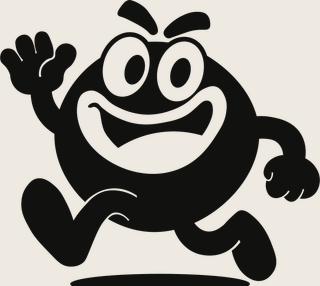

Medellín · Colombia — 62 referencias
La gorra decide el resto.
Gorras elegidas una por una y fotografiadas como llegan. Ni catálogo infinito ni relleno: solo las que aguantan el outfit completo.
 Yankees Navy / Hueso
Yankees Navy / Hueso
La colección
Cada gorra tiene su propia ficha: colorway, bordados y detalles reales de la foto. Elige la tuya y la despachamos el mismo día hábil.
Nada por aquí
No encontramos gorras con esa búsqueda. Prueba con otro equipo o escríbenos y te decimos qué hay disponible.
Preguntar por WhatsApp →Envíos gratis
A todo Colombia, sin mínimo de compra.
Compra online
Sin punto físico: pides, confirmamos y despachamos.
Atención por WhatsApp
Responde una persona, no un bot.
Empaque especial
Tu gorra sale protegida y lista para regalo.

Capítulo 01
No es solo una gorra.
Es la primera decisión del día.
Te la pones antes de salir y ya definiste el tono de todo lo demás. Por eso no vendemos cualquiera: si no aporta, no entra.

Sobre nosotros
CrowCaps
Nacimos en Medellín con una idea sencilla: que conseguir una buena gorra no dependa de la suerte. Buscamos, elegimos y fotografiamos cada pieza como es, sin retoques que cambien el color real.
No tenemos local. Tenemos WhatsApp, y del otro lado responde una persona que sabe qué hay disponible. Enviamos gratis a cualquier ciudad del país.
“It was a collective decision.” — Lema de la casa
Follow the crow
Fotos reales de las gorras que tenemos. Lo nuevo cae primero en Instagram y TikTok: @crowcaps.co



¿Ya encontraste
la tuya?
Escríbenos con el nombre de la gorra y te confirmamos disponibilidad al instante. Envío gratis a toda Colombia.
Pedir por WhatsApp →